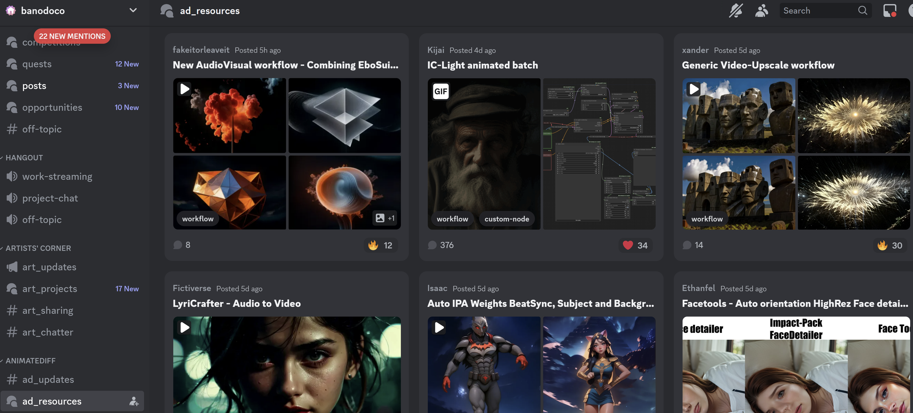
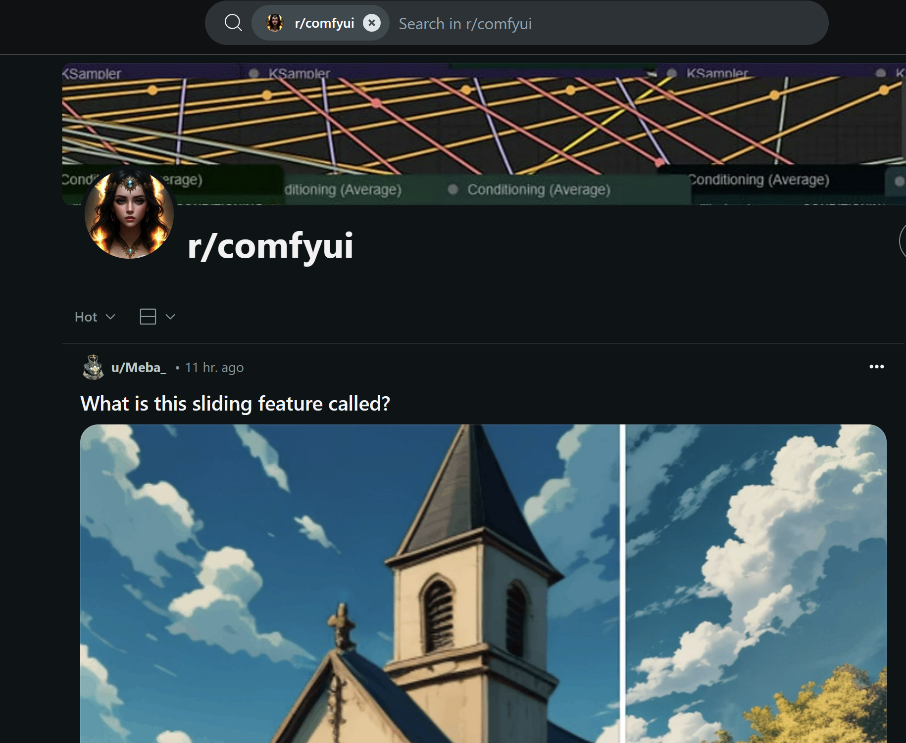

- Stable Diffusion has emerged as a transformative force in generative AI, mainly for text to image synthesis. This open source model was developed by UK company ‘Stability AI’, has democratised access to high quality image workflows, empowering artists, creatives, and professionals.
-
Why Stable Diffusion?
-
Image, Video and 3D
- Stable Diffusion and Stable Video Diffusion allow a lot of control, but at a cost of complexity.
-
Stable Diffusion 1.5, XL, and 3
- UK company with global impact. It is likely now winding up it’s operations after difficulty generating revenue in the hyper competitive GenAI market.
- Introduction: Open-source model by StabilityAI
- Cost: Free to run on own hardware; nominal fee for online tools.
- User Interface: User-friendly through platforms like Leonardo.AI.
- Strengths: Unlimited control, good image quality, no censorship.
- Weaknesses: Requires decent hardware, steep learning curve. Questions about Stability business.
- Skill Level: Intermediate to advanced.
- Introduction: Open-source model by StabilityAI
-
Text-to-Image Generation
- Stable Diffusion generates realistic and imaginative images from descriptive text prompts. This core functionality allows users to translate their creative visions into visual form with remarkable accuracy and detail. Whether it’s a photorealistic portrait, a surreal landscape, or an abstract concept, Stable Diffusion can bring your ideas to life with just a few words.
- A lot of the products you see on the market are either wrappers for the big AI companies, or else leveraging Stability models on rented cloud compute.
- {:width 800}
- {:width 300}
- UK company with global impact. It is likely now winding up it’s operations after difficulty generating revenue in the hyper competitive GenAI market.
-
Open Source
- Stable Diffusion’s open-source nature sets it apart from many other generative AI models.
- Users have free access to the model’s weights and a lot of modular code, allowing them to modify, distribute, and build upon it.
- This openness fosters collaboration, innovation, and community driven development.
- Ensures that the technology is not controlled by a select few entities.
- For brands and private companies this allows private development of digital assets.
-
User Friendly Interfaces
- Platforms like Leonardo.AI, RunDiffusion and Automatic1111’s WebUI provide intuitive and user friendly interfaces for interacting with Stable Diffusion.
-
Rundiffusion
- These interfaces offer a range of options for customizing parameters, fine tuning models, and experimenting with different artistic styles.
-
Customisation
- Stable Diffusion’s flexibility extends to its ability to be fine-tuned on custom datasets.
- Techniques like KOHYA Dreambooth and similar and LoRA DoRA etc training allow users to tailor the model to their specific needs and generate images that align with their unique artistic visions or domain-specific requirements.
:LOGBOOK:
CLOCK: [2024-05-12 Sun 11:12:30]—[2024-05-12 Sun 11:12:31] ⇒ 00:00:01
:END:
- {:width 300, :height 402}
- This opens up a world of possibilities for creating personalised images,
- Generating images of specific objects or individuals,
- Developing models for specialised domains like Fashion or architectural design.
-
Community Support
- One of Stable Diffusion’s greatest strengths is its vibrant and active community.
- Much of this happens on Discord and Reddit
- (1832) Discord | ad_resources | banodoco

{:width 800}- comfyui (reddit.com)

{:width 800}- The StableDiffusion subreddit
- The Stability AI Discord serve as hubs for sharing creations, resources, and tutorials.
- This collaborative environment fosters learning, inspiration, and rapid innovation
-
Core Models
Stable Diffusion 1.4-
Stable Diffusion 1.5
- Available on GitHub, this model is optimized for speed and efficiency,
- Suitable for generating images quickly, especially on less powerful hardware.
- Highest model diversity
Stable Diffusion 2.1-
SDXL
- Higher resolution, better prompt control
- Will often mess up human bodies due to constrained training
- More resource intensive
- Less compatible extensions
-
CosXL
- Likely the last update from the team, most of whom have left following the departure of founder Emad Mostaque.
- This is a “best practice” update to SDXL which allows higher contrast.
-
Zero123 & SV3D
-
Stable Cascade- Only a partial release.
- Not great adoption.
- Better prompt adherence.
-
Stable Diffusion 3
- Temporary Stable Diffusion 3 Ban | Civitai
- Might be ok in the end.
- Whole new architecture.
- Excellent prompt following.
- Terrible human anatomy.
-
Community models
- Models and inspiration from CivitAI, which is very often “not safe for work” so do exercise caution.
- Models and inspiration from CivitAI, which is very often “not safe for work” so do exercise caution.
-
-
Prompt Engineering: The Art of Guiding AI Creativity
- Effective prompt engineering is crucial for unlocking the full potential of Stable Diffusion. Different models demand different styles
- Here are some tips to enhance your prompts:
-
Specificity:
- Use specific keywords and descriptive phrases to clearly convey your desired image to the AI model.
- The more precise and detailed your prompt, the better the model can understand your intent and generate images that match your vision.
-
Negative Prompts:
- Utilize negative prompts to exclude unwanted elements or styles from the generated image.
- This allows you to refine the output and avoid generating images with undesirable features.
-
Compositional Control:
- Employ prompt scheduling and area prompting to create complex compositions and focus on specific details.
- These techniques allow you to control the timing and location of different elements within the image, resulting in more intricate and visually compelling outputs.
-
Extensions:
- Leverage extensions like “Test My Prompt” to understand the impact of each word in your prompt and refine your wording for better results. This extension helps you analyse how the model interprets different words and phrases, allowing you to optimize your prompts for the desired outcome.
-
Experimentation:
- Don’t be afraid to experiment with different models, fine tuning techniques, and prompt styles to discover new possibilities and achieve your desired artistic outcomes.
- The beauty of Stable Diffusion lies in its flexibility and the endless creative potential it offers.
-
-
Applications Across Industries:
- Stable Diffusion’s versatility has led to its adoption across various industries:
-
Digital Art Creation:
- Artists are using Stable Diffusion to create stunning and innovative digital artworks, pushing the boundaries of artistic expression and exploring new creative frontiers. Concept Visualization:
-
Designers and engineers
- Use Stable Diffusion to quickly generate visual representations of their ideas, facilitating rapid prototyping and concept development. This allows for faster iteration and improved communication within design teams. Character Design:
-
Game developers and animators
- Leverage Stable Diffusion to create unique and memorable characters, streamlining the design process and reducing the time and resources required for character creation. Illustration:
-
Illustrators
- Can use Stable Diffusion to generate high-quality illustrations for books, magazines, and other media, offering a faster and more efficient way to produce visually compelling artwork.
-
Virtual Production:
- Filmmakers and VFX artists can use Stable Diffusion to generate realistic backgrounds and environments for virtual production shoots, offering a cost-effective and efficient alternative to traditional green screen techniques.
-
- Stable Diffusion’s versatility has led to its adoption across various industries:
-
Addressing Hardware Limitations:
While Stable Diffusion requires a decent GPU for optimal performance, several solutions are emerging to address hardware limitations: Cloud-based Solutions: Platforms like RunDiffusion - https://www.forbes.com/sites/iainmartin/2024/03/20/key-stable-diffusion-researchers-leave-stability-ai-as-company-flounders/ Stable diffusion is a company that specializes in developing advanced artificial intelligence models. They are known for their expertise in creating generative models, which are capable of producing high-quality and realistic outputs in various domains such as image synthesis, language generation, and music composition. Stable Diffusion’s cutting-edge research and innovative approaches have made significant contributions to the field of generative AI.
-
Stable diffusion
- is a company that specializes in developing advanced artificial intelligence models. They are known for their expertise in creating generative models, which are capable of producing high-quality and realistic outputs in various domains such as image synthesis, language generation, and music composition. Stable Diffusion’s cutting-edge research and innovative approaches have made significant contributions to the field of generative AI.
- Illustrated overview
- Stable diffusion XL muse GPT Stable Diffusion Muse SDXL GPT Prompt Generator | Civitai
- Automatic1111 GUI and user guide
- citivia browser
- Automatic WebUI
- Vlads next SD
- InvokeAI simple interface
-
Prompt engineering links
-
Dreambooth retraining for faces
-
Birme image resizer
- 2 hour tutorial
- inject your face into any model (dreambooth)
- Guide for dreambooth
- Shivram
- Progen photorealism Miro guide
- rare dreambooth tokens
- Multi subject tokens
- tag editor
- SDXL dreambooth
- Lora guide
- stable swarm distributed comfyui
- Textual inversion
- Img2Img guide from reddit for face mapping
- textual inversion cheaper training
- CIO blog post
- google stable diffusion
- Cross attention replace named items
- 256 x faster speedup
- VoltaML acceleration
- Depth map into blender from SD2
- midjourney tweaks
- and another
- Updates Pastebin
- Game development using SD
- Wildcard manager using ChatGPT
- Depth2Img for text
- train chat GPT to write prompts
- non destructive image manipulation using seeds
- Instruct pix2pix
- reddit post
- Attention heatmap for prompts (youtube)
- enormous link roundup
- Prompt master variations management
- panoramic world builder
- GitHub AbdullahAlfaraj/Auto-Photoshop-StableDiffusion-Plugin: A user-friendly plug-in that makes it easy to generate stable diffusion images inside Photoshop using Automatic1111-sd-webui as a backend.
- GitHub ashawkey/stable-dreamfusion: A pytorch implementation of text-to-3D dreamfusion, powered by stable diffusion.
- Fine tune stable diffusion
- GitHub Sanster/lama-cleaner: Image inpainting tool powered by SOTA AI Model. Remove any unwanted object, defect, people from your pictures or erase and replace(powered by stable diffusion) any thing on your pictures.
- holovolo immersive volumetric VR180 videos and photos, and 3D stable diffusion, for Quest and WebVR
- The Illustrated Stable Diffusion Jay Alammar Visualizing machine learning one concept at a time.
- reddit educational links
- Negative prompt hack tip
- Modify images with text
- Photorealism
- sdtools image v 1.6
- Character plugin
- Checkpoints
- Stability specific tools
- Arible Prompt Database https://www.arible.co/prompts
- [Guide] Make your own Loras, easy and free | Stable Diffusion Other | Civitai: You don’t need to download anything, this is a guide with online tools. Click “Show more” below.
- sdxl lora training
- dylora scripts
- kohya fork with scripts
- lora of loras (compressed sets)
- chart of print size aspect ratios
- SDXL native text lora
- SDXL lcm motion lora
- SDXL universal negative prompt
- text, watermark, low-quality, signature, moiré pattern, downsampling, aliasing, distorted, blurry, glossy, blur, jpeg artifacts, compression artifacts, poorly drawn, low-resolution, bad, distortion, twisted, excessive, exaggerated pose, exaggerated limbs, grainy, symmetrical, duplicate, error, pattern, beginner, pixelated, fake, hyper, glitch, overexposed, high-contrast, bad-contrast
- SDXL prodigy training guide
- Lora training interface for windows
- Refined model
- Fine tuning with captioning and other fine tuning tricks, followfox
- Negative embedding textual inversion for hands etc
- GitHub kpthedev/ez-text2video: Easily run text-to-video diffusion with customized video length, fps, and dimensions on 4GB video cards, as well as on CPU.
- Gligen grounding capability for sd1.5
- This repository contains a ComfyUI Extension for Automated Text Generation. The extension provides nodes which can be used to automate the text generation process. The goal is to build a node-based Automated Text Generation AGI. This extension should ultimately combine all of the features of the existing text generation tools into one tool.
- [R] Text-to-image Diffusion Models in Generative AI: A Survey: r/MachineLearning
- Tutorial: Creating a Consistent Character as a Textual Inversion Embedding
- Segment anything webui
- segment anything training
- Nvidia stable diffusion segment through clip
- Overriding iphone footage with SD characters using controlnet
- Interactive photo manipulation GAN
- 3d plugin for Automatic1111
- Face replace plugin for automatic
-
Images
- Colour palette extraction
- Text based real time image manipulation
- Sketch guided text to image inference
- Google prompt to prompt image remodeller
- github
- Img2Prompt
- eDiffi nvidia text to image
- Image to caption
- lama image cleanup
- upscalers
- upscayl
- Google Muse
- Flair generate photo shoots of products
- Vector graphics from text
- Simple stock image generator
- Patterned: Generates royalty-free patterns.
- Cleanup.picture: Removes objects, defects, people or text from your images.
- Looka: Generates brand names and logos.
- CLIP interrogator and prompt engineering colab
- Prompt management engine (local and cloud) (promptlayer)
- Composer stable diffusion TYPE model
- Multi-diffusion panoramas
- coherent panoramas paper
- UX design AI
- pix2pix-3D: 3D-aware Conditional Image Synthesis
- HuggingFace Demo for /ELITE: new fine-tuning technique that can be trained in less than a second/ now available: r/StableDiffusion
- GIGAgan
- implementation
- GitHub danielgatis/rembg: Rembg is a tool to remove images background (other)
- Other. The text is a description of a new product called the “Meta 2” which is a headset that allows users to interact with a computer using their hands.
- GitHub kanewallmann/Dreambooth-Stable-Diffusion: Implementation of Dreambooth with Stable Diffusion (tweaks focused on training faces)
- GitHub sedthh/pyxelate: Python class that generates pixel art from images (other)
- GitHub upscayl/upscayl: Free and Open Source AI Image Upscaler for Linux, MacOS and Windows built with Linux-First philosophy. (other)
- GitHub YuxinWenRick/hard-prompts-made-easy: Contribute to YuxinWenRick/hard-prompts-made-easy development by creating an account on GitHub.
- This repository contains a tool for gradient-based discrete optimization, which can be used to find the optimal solution for a given problem. The tool is designed to be easy to use, and includes a number of features to make the process of finding the optimal solution easier.
- The Civitai Helper is a Civitai extension that allows for stable diffusions of other Civitai extensions. It also includes an animation which rotates and scales the extension icon.
- GitHub YuxinWenRick/hard-prompts-made-easy: Contribute to YuxinWenRick/hard-prompts-made-easy development by creating an account on GitHub.
- This repository contains code for a gradient-based discrete optimization method. The method is designed to make it easy to find hard prompts, which are useful for training machine learning models.
- StableSam meta segmentation plus SD inpainting
- New Feature: “ZOOM ENHANCE” for the A111 WebUI. Automatically fix small details like faces and hands! : r/StableDiffusion https://www.reddit.com/r/StableDiffusion/comments/11pyiro/new_feature_zoom_enhance_for_the_a111_webui/
- Realtime scribble
- latent labs 360 images lora
- Kandinsky model
- finetuned 2.1
- QR codes
- DragGan image editing through drag points
- Faster CPP clip
- animateDiff
- AnimatediffSDXL lora
- diffbar image sharpen
- SD model mixer
- Textual Inversion character creation tutorials/consistent_character_embedding/README.md at main · BelieveDiffusion/tutorials (github.com)
- %3 e
- AI Creating ‘Art’ Is An Ethical And Copyright Nightmare
- CompVis/stable-diffusion: A latent text-to-image diffusion model
- Consistency in Stable Diffusion Definitive Guide to Having Multiple Faces of the Same Character
- Consistent character embedding#readme%22
- Consistent character embedding#readme}{walkthrough
- Controlnet for DensePose v1.0 | Stable Diffusion Controlnet | Civitai
- From the StableDiffusion community on Reddit: New Feature: “ZOOM ENHANCE” for the A111 WebUI. Automatically fix small details like faces and hands!
- From the StableDiffusion community on Reddit
- How to Inject Your Trained Subject e.g. Your Face Into Any Custom Stable Diffusion Model By Web UI
- Imagic: Text-Based Real Image Editing with Diffusion Models
- RODIN Diffusion
- Readme
- Readme
- Spirited Away General Model (1.5) @Spirited | Stable Diffusion Checkpoint | Civitai
- Style-Info: An embedding for infographic style art 1.0 | Stable Diffusion Embedding | Civitai
- THE DECODER
- Tutorial: Creating a Consistent Character as a Textual Inversion Embedding · BelieveDiffusion tutorials · Discussion #3
- Ultimate Guide to Upscale Images with AI in Stable Diffusion
- What are Diffusion Models?
- Wojak SDXL v1.0 | Stable Diffusion LoRA | Civitai
- https://www.reddit.com/r/StableDiffusion/comments/145d6by/scannable_cat_qr_art_with_ai_my_recent_attempt)
- https://www.reddit.com/r/StableDiffusion/comments/114dxgl/advanced_advice_for_model_training_finetuning_and/%22%3E%3Crichcontent
- wl-zhao/UniPC: [NeurIPS 2023] UniPC: A Unified Predictor-Corrector Framework for Fast Sampling of Diffusion Models
- 万象熔炉 | Anything V5/Ink ink | Stable Diffusion Checkpoint | Civitai
- Align your Latents: High-Resolution Video Synthesis with Latent Diffusion Models
- Anthro v1 | Stable Diffusion Embedding | Civitai
- Become A Stable Diffusion Prompt Master By Using DAAM Attention Heatmap For Each Used Token Word
- Consistent AI Characters with Different Poses Angles CharTurner Stable Diffusion
- From the StableDiffusion community on Reddit: Advanced advice for model training / fine-tuning and captioning
- From the StableDiffusion community on Reddit
- Google’s prompt-to-prompt AI for Stable Diffusion tutorial!
- Home
- How to Make 360 VR Environments for Quest with AI Stable Diffusion and Blender Tutorial 2023
- Open Source AI and Stable Diffusion with Emad Mostaque
- Reddit Prove your humanity
- Refined Refined v11 | Stable Diffusion Checkpoint | Civitai
- Spirited Away General Model (1.5) @Spirited | Stable Diffusion Checkpoint | Civitai
- Stable Diffusion Outpainting Colab Tutorial
- Style-Info: An embedding for infographic style art 1.0 | Stable Diffusion Embedding | Civitai
- Tutorial: Creating a Consistent Character as a Textual Inversion Embedding · BelieveDiffusion tutorials · Discussion #3
- Zero To Hero Stable Diffusion DreamBooth Tutorial By Using Automatic1111 Web UI Ultra Detailed
- altryne/awesome-ai-art-image-synthesis: A list of awesome tools, ideas, prompt engineering tools, colabs, models, and helpers for the prompt designer playing with aiArt and image synthesis. Covers Dalle2, MidJourney, StableDiffusion, and open source tools.
- diStyApps/Stable-Diffusion-Pickle-Scanner-GUI: Pickle Scanner GUI
- https://www.reddit.com/r/StableDiffusion/comments/100tp0v/protogenx34_has_absolutely_amazing_detail/%22
- https://www.reddit.com/r/StableDiffusion/comments/10c9kg8/depth2img_works_well_for_text_inputs/%22
- https://www.reddit.com/r/StableDiffusion/comments/10c9kg8/depth2img_works_well_for_text_inputs/%7D%7BDepth2Img
- https://www.reddit.com/r/StableDiffusion/comments/10gs4s2/new_expert_tutorial_for_textual_inversion_text/%7D%7BTextual
- https://www.reddit.com/r/StableDiffusion/comments/10l74sl/instruct_pix2pix_is_amazing_inpaintingimg2img/%7D%7BInstruct
- https://www.reddit.com/r/StableDiffusion/comments/10no6tp/non_destructive_image_variation_in_text2image/%22
- https://www.reddit.com/r/StableDiffusion/comments/10rr99t/mocap_unreal_engine_warpfusion/%7D%7BMoCap
- https://www.reddit.com/r/StableDiffusion/comments/10tjzmf/instructpix2pix_is_built_straight_into_the/%22
- https://www.reddit.com/r/StableDiffusion/comments/10tjzmf/instructpix2pix_is_built_straight_into_the/%7D%7Breddit
- https://www.reddit.com/r/StableDiffusion/comments/1148x38/tencent_ai_just_release_their_method_and_code/%7D%7BTencent
- https://www.reddit.com/r/StableDiffusion/comments/114dxgl/advanced_advice_for_model_training_finetuning_and/%7D%7BAdvanced
- https://www.reddit.com/r/StableDiffusion/comments/114zmh3/controlnet_and_ebsynth_make_incredible_temporally/%22
- Stable Assistant — Stability AI Stable Diffusion
- Controlnet and similar Stable Diffusion [xinsir/controlnet-union-sdxl-1.0 · Hugging Face]
- AI Video (1865) Discord | “Steerable Motion 1.4 - now with unlimited input frames! (+ minor optimisations)” | banodoco Stable Diffusion Stable Video Diffusion
- (https://huggingface.co/xinsir/controlnet-union-sdxl-1.0)